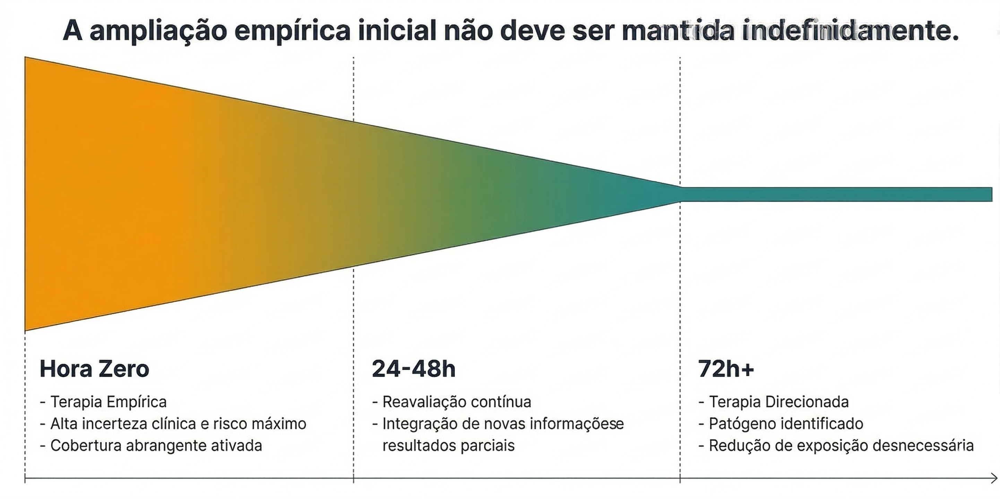

Bacteremia e sepse
A bacteremia e a sepse representam situações em que a decisão sobre antibioticoterapia é guiada simultaneamente pela urgência clínica e pela incerteza etiológica. A presença de disfunção orgânica associada à suspeita de infecção caracteriza um cenário no qual o tempo até o início de terapia antimicrobiana eficaz pode influenciar significativamente o prognóstico 3.
Nessas condições, o raciocínio clínico precisa ser aplicado com maior sensibilidade ao risco. A identificação do foco provável da infecção — pulmonar, urinário, abdominal, cutâneo ou associado a dispositivos invasivos — orienta a escolha inicial do espectro antimicrobiano.

A probabilidade etiológica também é modulada por fatores relacionados ao paciente e ao contexto assistencial, como internação recente, uso prévio de antibacterianos, presença de cateteres vasculares ou urinários e o perfil epidemiológico local de resistência bacteriana.
Em pacientes com instabilidade clínica ou disfunção orgânica significativa, a cobertura antimicrobiana inicial tende a ser mais abrangente para reduzir o risco de inadequação terapêutica precoce. Em quadros como choque séptico, a falha em cobrir o patógeno responsável nas primeiras horas de evolução associa-se a piores desfechos clínicos 3.
Entretanto, a ampliação inicial do espectro não deve ser mantida indefinidamente. A terapia antimicrobiana deve ser reavaliada à medida que novas informações clínicas e microbiológicas se tornam disponíveis 3.
Nesse contexto, as hemoculturas assumem papel central na identificação do agente etiológico. Quando um microrganismo é isolado e seu perfil de suscetibilidade é conhecido, o ajuste terapêutico permite direcionar o tratamento ao patógeno identificado e reduzir a exposição desnecessária a antibacterianos de amplo espectro.
Também é importante reconhecer que nem todo quadro com febre, taquicardia e alterações laboratoriais corresponde necessariamente a sepse bacteriana. Processos inflamatórios não infecciosos, eventos tromboembólicos e outras condições sistêmicas podem mimetizar apresentações clínicas semelhantes.
A decisão de iniciar antibioticoterapia deve, portanto, basear-se na probabilidade clínica de infecção ativa, considerando simultaneamente gravidade, foco provável e fatores de risco individuais.